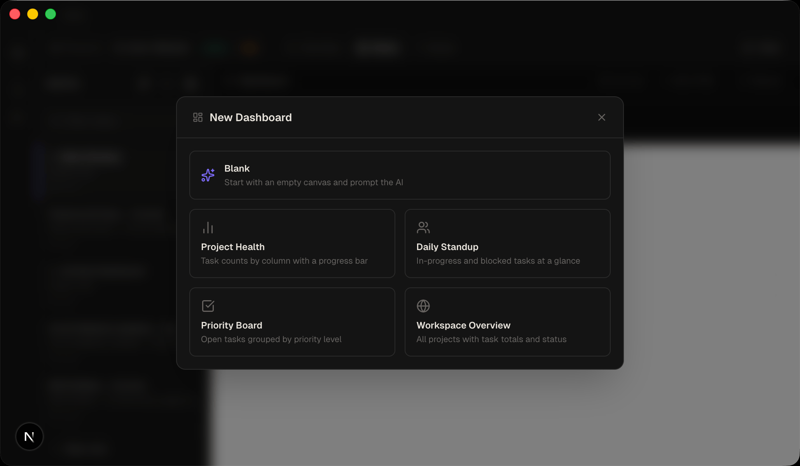
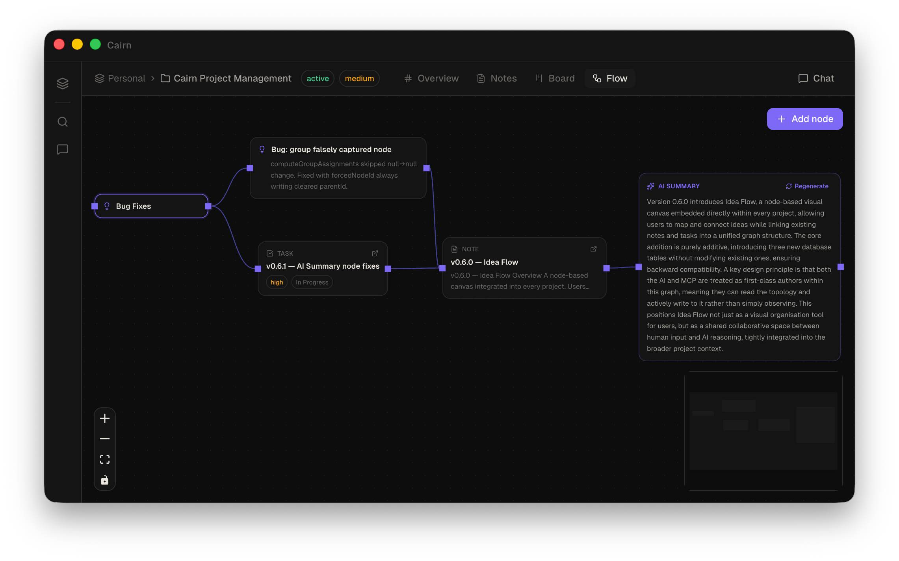
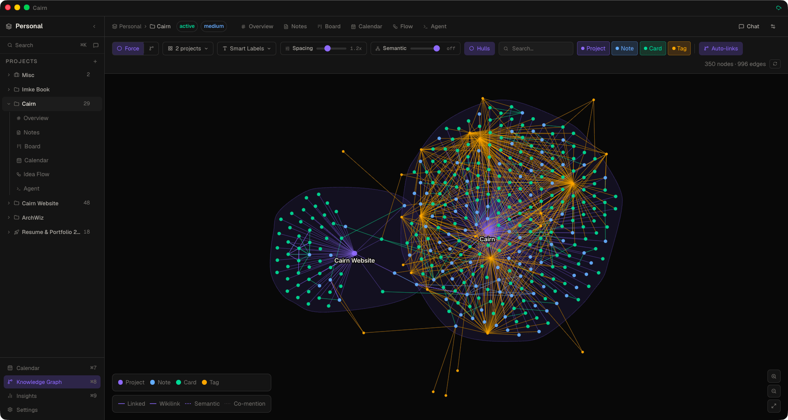
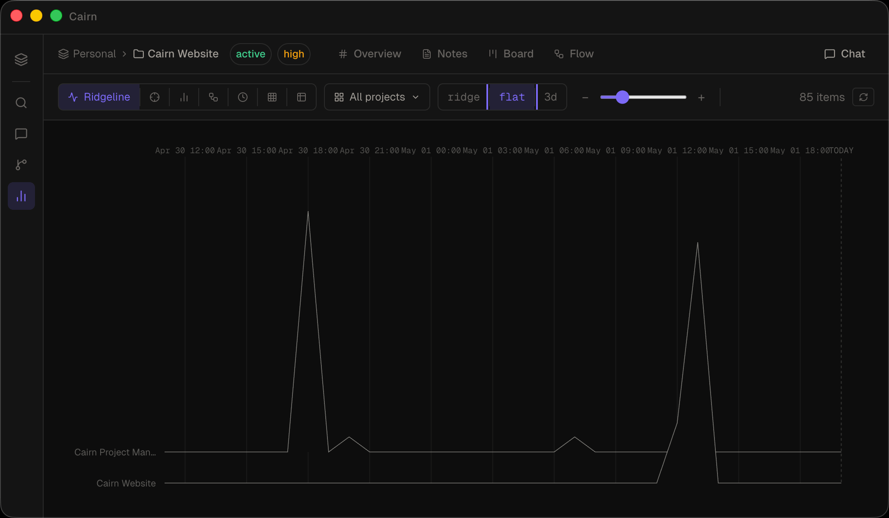

Cairn is a local-first project management app with AI built in. No account. No cloud. No subscription.

Everything lives in plain markdown files on your machine. No cloud, no account, no lock-in.
Chat with your project, generate PRDs, spawn tasks — natively offline with llama.cpp on-device models, or through your own AI endpoint.
SQLite-backed, Electron-native. Opens instantly. Works without internet.
A full markdown editor with a formatting toolbar, inline selection preview, and a dedicated read mode.
Every note is a plain .md file with YAML frontmatter — readable and editable in any text
editor, forever.
$…$ and display $$…$$[!NOTE], [!WARNING], [!TIP] and more
{{date}} / {{title}} placeholders — Meeting Notes, Weekly Review, Daily Standup starters.md file sync back automatically
Drag-and-drop task cards across configurable columns. Priority, due dates, and note links — without the ceremony.

A project-scoped calendar that lays out your task cards by due date. See what's overdue at a glance, drag any task onto a different day, and pull unscheduled work onto the grid.

Cairn ships a built-in stateful coding agent. Point it at your codebase, give it a task, and it reads files, writes code, runs commands, and keeps your board and notes updated as it works — all without leaving the app. No CLI binary required.

Chat with your project in a persistent side panel. The AI reads notes, creates tasks, moves cards, and writes PRDs — live, with a tool call activity feed so you see exactly what it's doing.

Describe a feature in plain language. Cairn generates a full PRD with user stories, acceptance criteria, and open questions — then spawns the tasks directly onto your board.

Ask the AI to generate an interactive HTML dashboard for any project. Dashboards fetch live data on every load and update automatically — no rebuild, no deploy.

Drag nodes onto a freeform canvas, connect them with edges, and let the AI summarise any subgraph. Idea Flow bridges the gap between raw thinking and structured project work — without leaving Cairn.

A workspace-level view of every relationship between your notes, tasks, projects, and tags. Switch between a force-directed graph and a radial hierarchy tree, with auto-discovered co-mentions, keyword similarity, and shared assignees.
get_knowledge_graph and get_neighbors for AI research
traversal
A dedicated analytics view that surfaces patterns across every project. A ridgeline of task activity, a beeswarm of due dates, a bullet chart of project health, a Sankey of task flow through your pipeline — and three more. All scoped to whatever projects you care about.

Access and update your notes, board, and chat securely from any phone or tablet on your local network. No external servers, internet connection, or cloud accounts required.

Cairn ships a bundled MCP server. Connect Claude Desktop, OpenCode, Cursor — or any MCP-compatible client — and give your AI direct read/write access to your notes and tasks.
Writes appear in the Cairn UI instantly. No restart, no sync delay. 50 tools — including patch_note
for surgical edits — let the AI replace exactly what changed, without re-sending the whole document.
// .opencode/config.json { "mcp": { "cairn": { "type": "local", "command": [ "/Applications/Cairn.app/Contents/Resources/app.asar.unpacked/dist-mcp/cairn-mcp" ], "enabled": true } } }
The reverse direction, too. Connect Cairn's own AI chat and coding agent out to remote MCP servers and any HTTP API — sign in with OAuth, or install a ready-made connector from the community registry in one click.
// Settings → Tools → Add server { "name": "Linear", "url": "https://mcp.linear.app/sse", "transport": "sse", "authMode": "oauth" } // → click "Sign in", approve in browser, done. // Tokens are stored in your OS keychain.
Full undo/redo across notes, board, and Idea Flow. The command pattern coalesces rapid typing into a single undo step, and skips text inputs that handle it natively.
Yes. Cairn is free and open source.
In a folder you choose on your own machine. A SQLite database and plain markdown files — nothing leaves your computer unless you put the folder in a cloud-synced location yourself.
Completely. The app, the board, the notes, and the AI chat (using the built-in offline llama.cpp server, or a local endpoint like Ollama) all work without internet.
On-device Llama (via integrated llama.cpp), or any OpenAI-compatible endpoint. That includes OpenAI GPT models, Anthropic Claude (via compatible proxies), Ollama (local), and LM Studio (local).
Model Context Protocol is an open standard for giving AI assistants access to external tools. Cairn ships a bundled MCP server so tools like Claude Desktop, OpenCode, or Cursor can read and write your notes and tasks directly.
macOS, Windows, and Linux. Built with Electron.